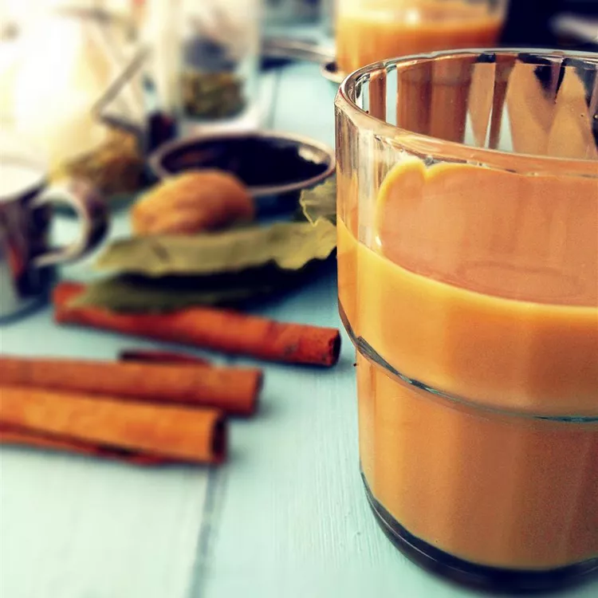

Masala Chiya
Milk, black tea, cardamom, cinnamon, and cloves are simmered together in this recipe for hot and spicy chai tea.

Ingredients:
- 7 cups water
- 6 tablespoons light brown sugar
- A piece of ginger peeled and chopped
- 1 cup milk
- 2 tablespoons darjeeling tea leaves
Steps of Masala Chiya:
- Combine water, brown sugar, ginger, cinnamon stick, cardamom pods, cloves, bay leaves, fennel seeds, and peppercorns together in a pot; cover and boil for 20 minutes.
- Remove from the heat, add tea leaves, and allow to steep for 10 minutes. Stir milk into tea mixture and bring to a boil. Strain tea into tea cups.
Homepage